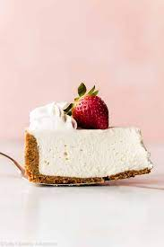

No Bake Amaretto Cheesecake

Description
A versatile no-bake cheese cake flavored with your favorite liquer.
Ingredients
- 1 package of cream cheese
- 1 cup-ish of heavy whipping cream
- 1/2 cup of sugar, or honey if you prefer
- Amaretto, (or liqueur of your choice)
- Graham Cracker Crust
- If using a fruity liqueur, you can add fruit!
Steps
- With a hand-mixer or a stand mixer if you're fancy, whisk cream cheese and heavy whipping cream until you see soft peaks.
- Add honey or sugar and your chosen liqueur and beat util you see stiff peaks.You can also add fruit to compliment your liqueur. Go wild.
- Pour cream cheese mixture into graham cracker crust and let chill in the fridge for an hour.
Variations
- Raspberry liqueur and fresh raspberries
- Raspberry liqueur and lime juice/zest
- Lime juice and ripe avocado